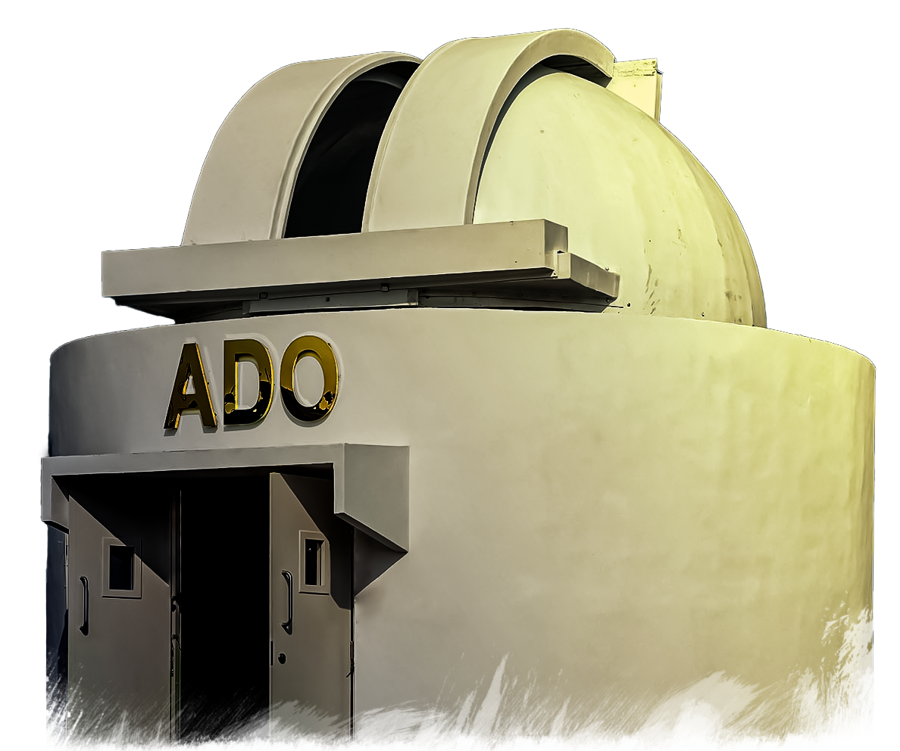
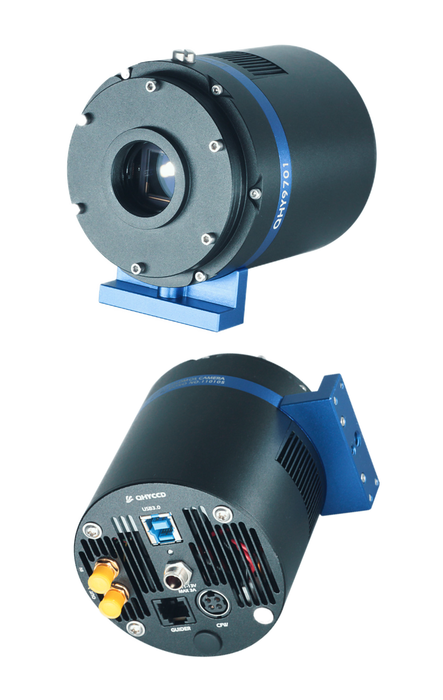
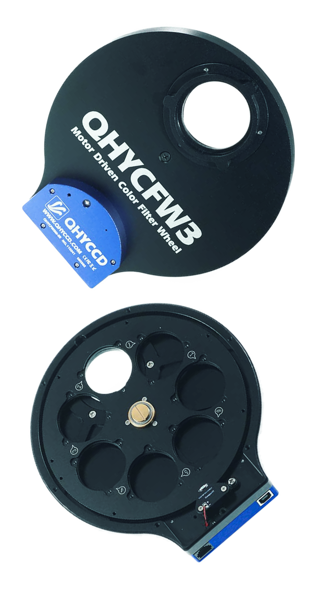

Darksky
Observatory
Hyderabad
The Advanced Darksky Observatory at IIT Hyderabad is the first in-campus research observatory
among all IITs which aims to provide both cutting edge astronomy and engineering research.
It was inaugurated by Dr. K. Radhakrishnan (former Chairman, ISRO) on 28th February, 2023

Sky-Watcher StarGate Dobsonian 20" SynScan
The Sky-Watcher StarGate Dobsonian with its huge light gathering capabilities
provides the ultimate WOW factor experience for aficionados of visual astronomy,
delivering outstanding performance on both Planetary and Deep-Sky objects.
It comes with Sky-Watcher's signature SynScan Goto function which
makes our observation experience smoother. The elegant and rigid all-metal
truss tube design is easily transportable when unassembled, and can be assembled
and ready for use in about 20 minutes. The mount provides motorised operation in
both Alt and Azimuth axes, and can slew the telescope automatically, and track over
42,900-night sky objects from the Synscan handset's extensive computerised database.
It features Freedom-Find™ Dual-Encoder technology, which also allows the telescope to be
moved manually in either axis without losing its alignment or positional information,
giving us enormous convenience and flexibility during observing sessions.

QHY9701 CCD
QHY9701 is a cooled scientific CMOS camera with GSENSE9701 back illuminated sCMOS sensor.
The CMOS has a very wide spectral response. With the characteristics of large pixels,
ultra-wide spectrum and low noise, it is suitable for high-end microscopy, micro-optics,
biofluorescence, astronomy and other scientific research fields. It has 89% peak QE at 610nm.
The high, wide response from NIR to UV makes the QHY9701 a perfect camera for spectrum
analysis and spectrum imaging systems. The QHY9701 is also an ideal scientific CMOS camera
for Fluorescence imaging.

QHYCFW3 Filter Wheel
The QHYCFW3 series filter wheel hosts 7 filters from violet to red in the visible spectrum.
QHYCFW3 filter wheels can be controlled by either an independent external program using the
filter wheel’s USB port or via a special 4-pin port. When connected to the QHY 4-pin port
there is no need for an additional power cable or control program. All of the filter wheel
functions can be controlled through the QHY camera.
